1769年，31岁的拉格朗日正在柏林科学院担任数学物理学部主任，20岁的拉普拉斯受聘成为巴黎军事学院数学教授，他们未来的学生和朋友拿破仑·波拿巴在地中海的南科西嘉省省会阿雅克肖呱呱坠地。仅仅一年以前，这座岛屿还隶属于亚平宁半岛的热那亚。倘若这项关于岛屿的交易推迟若干年进行，那么成年以后的拿破仑极有可能致力于意大利的领土扩张，或参加抵抗法兰西的地下组织，就像他的父亲所做的那样。事实上，拿破仑家族曾是托斯卡纳的贵族，托斯卡纳的首府正是文艺复兴的发源地——佛罗伦萨。
科西嘉抵抗组织成立后不久，其领导人便逃亡在外了。为了儿子的教育和前程，律师出身的老波拿巴只得臣服于新主子，出任阿雅克肖地区的陪审员。这样一来，9岁的拿破仑才有机会进入军事学校的预科班，后来经过多次转学，他最终从巴黎军事学院毕业。正是在巴黎军事学院里，颇有数学才华的拿破仑结识了数学家拉普拉斯。1785年，老波拿巴病逝，拉普拉斯被学校指定单独对16岁的拿破仑进行考试。
拿破仑从军校毕业后做了炮兵少尉，同时阅读了大量军事著作。不久，他又回到科西嘉岛待了两年，看来他对故乡很有感情。事实上，他后来还多次返乡，如果有恰当的支持，仍有可能帮助其取得独立。可是，随着法国大革命逐渐进入高潮，拿破仑被巴黎深深地吸引了。作为伏尔泰和卢梭（J.J.Rousseau，1712—1778）的忠实读者，拿破仑相信法国必须进行一场政治变革。不过，1789年7月14日（后来成为法国国庆日），当巴黎的群众攻占了象征国王暴政的巴士底狱时，拿破仑却身处外省。
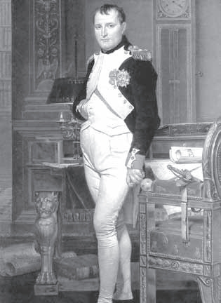
业余的几何学家拿破仑
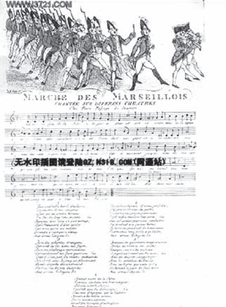
诞生于法国大革命时期的《马赛曲》
法国大革命不仅推翻了法国的旧政权，也改变了欧洲的政治气候。关于这场革命的起因，历史学家的解释虽不尽相同，但公认的理由有5条：当时法国人口在欧洲最多，已经不能充分供养；日益扩大的富有的资产阶级被排除在政治权力之外，这一点在法国比其他国家更突出；农民深刻了解自己的境遇，越来越不能忍受剥削他们的封建制度；出现了若干位主张政治和社会变革的哲学家，其著作较为流行；由于参加美国独立战争，国库亏空。
毫无疑问，拿破仑进军巴黎需要命运女神的眷顾。1793年1月，法国国王路易十六被送上了断头台，罪名是判国罪。此前，法国革命者已向欧洲多个国家的反革命政权势力宣战，法国国内的情况也十分危急。次年冬天，在法国南部港口城市土伦，拿破仑率领他的炮兵，击败了前来保驾的英国军队。他凭借此战一举成名，并被晋升为准将。又过了一年，正当保王党实行白色恐怖，试图在巴黎夺权时，他们的阴谋被拿破仑粉碎。至此，26岁的科西嘉人拿破仑已经成为法国大革命的救星和英雄。
也是在1795年，古老的巴黎大学和法兰西科学院被国民公会关闭，取而代之的是新成立的巴黎综合理工学院和法兰西学院（法兰西科学院成为其三个分院之一），还有此前一年成立的巴黎师范学院（1808年重建时更名为巴黎高等师范学院）。虽然这几所学校原先的宗旨分别是培养工程师和教师，却都把数学放在十分重要的位置上，这可能与当初负责建校工作的孔多塞（Condocet，1743—1794）是数学家有关。他把法国最有名的数学家都邀请了过来：拉格朗日、拉普拉斯、勒让德（Legendre，1752—1833）、蒙日，其中蒙日还担任了巴黎综合理工学院的首任校长。
可是，拿破仑还要再等若干年才会当上第一执政官。在此期间，他率兵南征北战，意大利、马耳他和埃及都留下了他的足迹，他指挥的战斗胜多负少。当他班师回国时，可以说是独揽军政大权，就像当年从埃及返回罗马的恺撒将军。在18世纪的最后一个圣诞节，法国颁布了一部新宪法。按照这部宪法，拿破仑作为第一执政官拥有无限权力，可以任命部长、将军、文职人员、地方长官和参议员。自那以后，他的数学家朋友纷纷被封高官。
虽说拿破仑是借助法国大革命才登上权力的宝座，但他野心勃勃，并不相信人民的主权、意志或议会的辩论，反倒倾心于推理和才智之士，比如数学家和法学家。然而，战争仍在继续，领土扩张才刚刚开始，对第一执政官来说，要巩固政权，要完成帝国的伟业，军队需要得到最精心的养护。于是，巴黎综合理工学院被军事化，致力于培养炮兵军官和工程师，教授们则被鼓励研究力学问题，研制炮弹或其他杀伤力强的武器，拿破仑也与他们来往密切。
早年的数学功底，加上与数学家的交往，使得拿破仑有能力和勇气向他们提出这样一个几何问题：只用圆规，不用直尺，如何把一个圆周四等分？这个难题最终由因战争而受困巴黎的意大利数学家马斯凯罗尼（L.Mascheroni，1750—1800）解决了，他还写了一本《圆规几何》的书献给拿破仑，其中包含更广泛的作图理论：只要给定的和所求的均为点，就可以仅通过圆规完成作图。这样一来，欧几里得作图法中所需的没有刻度的直尺也变得多余。有意思的是，后人发现，在1672年出版的一本丹麦文旧书中，一个署名为摩尔的不可考作者已经知道并证明了马斯凯罗尼作图理论。
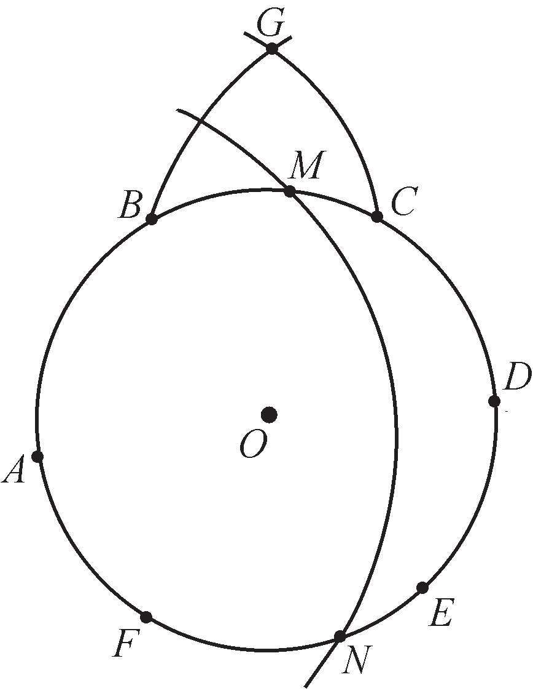
拿破仑问题的解答
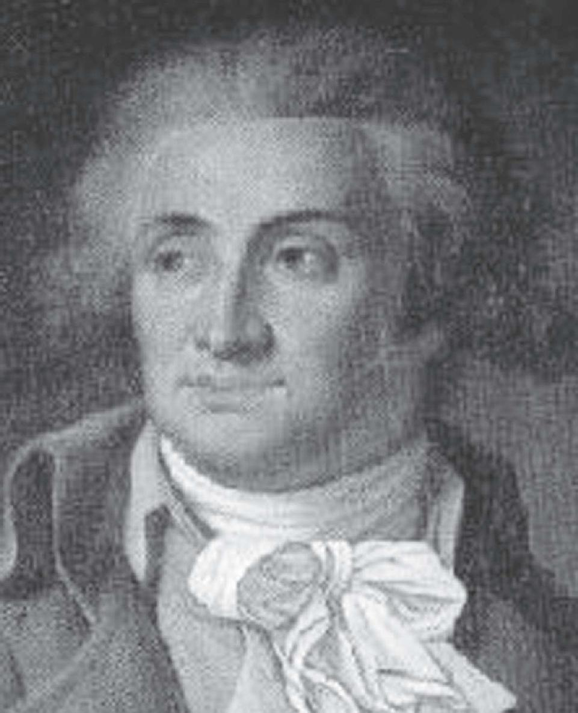
数学家中的革命家孔多塞
圆周四等分的具体作图方法如下：取已知圆O上任一点A，以A为一个分点把此圆六等分，分点依次为A、B、C、D、E、F（如上图）。分别以A、D为圆心，AC或BD的长为半径作两个圆，相交于G点。再以A为圆心、OG的长为半径作圆，交圆O于M、N点，则A、M、D、N可四等分圆O的圆周。这是由于按照毕达哥拉斯定理，AG2 =AC2 =（2r）2 –r2 =3r2 ，AM2 =OG2 =AG2 –r2 =2r2 ，AM=2r，因此AO⊥MO。
现在我们要谈谈拉格朗日（J.L.Lagrange，1736—1813）了，他和欧拉被公认为18世纪两个最伟大的数学家。至于他们俩谁更伟大这个问题曾引起过一番争论，这在一定程度上也反映了支持者的数学趣味。拉格朗日出生在意大利西北部名城都灵，也就是菲亚特汽车和尤文图斯足球队的发源地。由于与法国近在咫尺，都灵在16世纪一度被法国占有，而在拉格朗日生活的时代，它是撒丁王国的首都。这个地位直到19世纪才有所改变，在此之前都灵成为实现意大利统一的政治和思想中心。
拉格朗日身上混杂着法国和意大利的血统，以法国血统居多。他的祖父是法国骑兵队队长，为撒丁岛（如今隶属意大利的地中海岛屿）的国王服务以后，在都灵定居下来，并与当地的一个著名家族联姻。拉格朗日的父亲也一度担任撒丁王国的陆军部司库，但却没有管理好自己的家产。作为11个孩子中唯一的幸存者，拉格朗日所继承的遗产寥寥无几，但他后来把这件事看作发生在自己身上最幸运的事，“要是我继承了一大笔财产的话，我或许就不会与数学共命运了”。
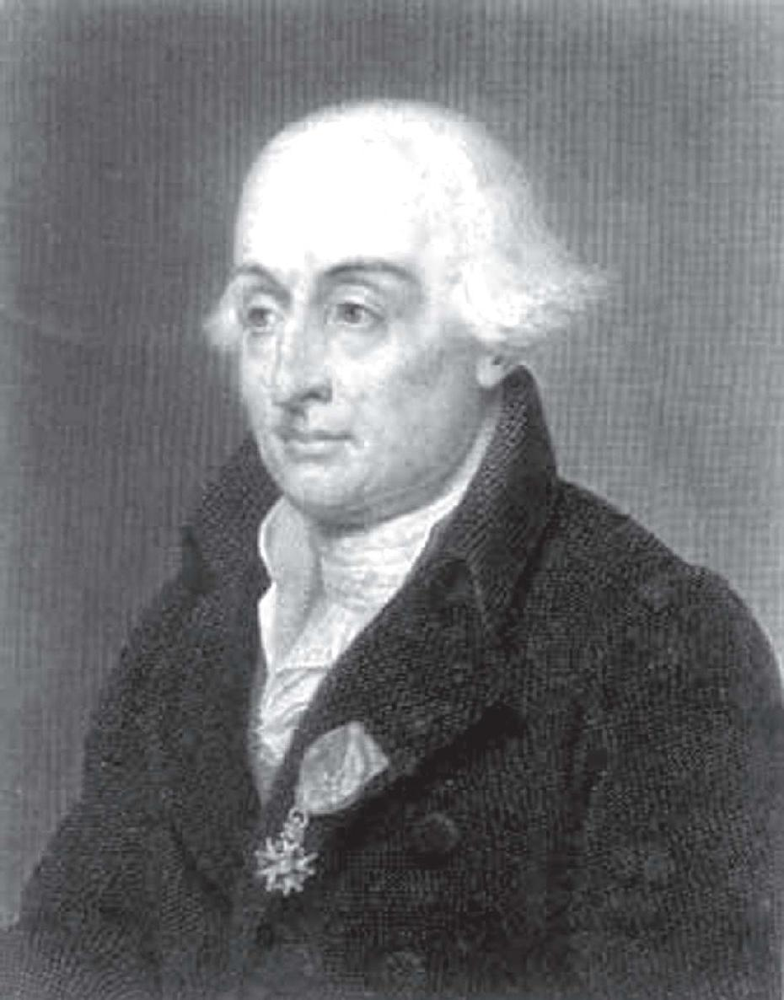
拥有法意血统的拉格朗日
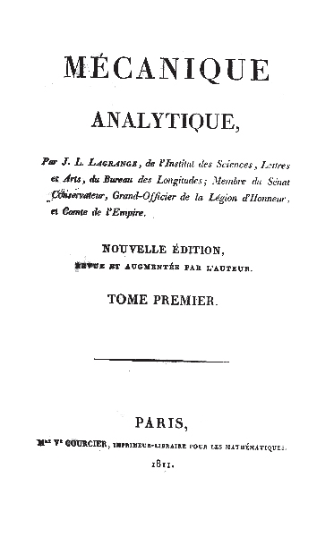
拉格朗日《分析力学》首卷（1811）
拉格朗日上学以后，最初的兴趣是在古典文学方面，欧几里得和阿基米德的几何著作并没有让他产生多少热情。后来有一次，他读到牛顿的朋友、哈雷彗星的发现者哈雷写的一篇赞誉微积分的科普文章，就立刻被这门新学科迷住了。在极短的时间内，他通过自学掌握了那个时代的全部分析知识。据说拉格朗日19岁（还有一种说法是16岁）时就被任命为都灵皇家炮兵学院的数学教授，在数学领域展开了他最辉煌的人生经历。到25岁时，拉格朗日已经步入世界最伟大的数学家之列了。
与其他数学家不同，拉格朗日从一开始就是一位分析学家，这也从一个侧面证明了那个时代分析是最热门的数学分支。这种偏爱体现在他19岁时就构想好的《分析力学》一书中，但这部著作直到他52岁时才在巴黎出版，而那时他对数学基本上失去了兴趣。在这本书的前言中，拉格朗日这样写道：“在这本书中你找不到一幅图。”但是，他接着说道，力学可以看作四维空间几何学——三个笛卡尔直角坐标系加上一个时间坐标，这样就足以确定一个运动点的空间和时间位置。
在今天我们熟知的数学符号中，函数f（x）的导数符号f'（x）、f（2） （x）、f（3） （x）就是由拉格朗日引进的。他还建立起了以他的名字命名的拉格朗日中值定理，这个定理是这样叙述的：如果函数f（x）在闭区间[a，b]内连续，在开区间（a，b）内可导，则必然存在a<ζ<b，使得
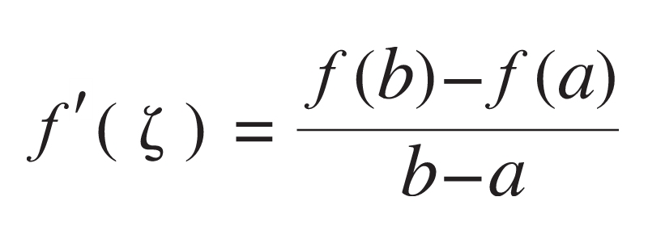
此外，他用连分数给出了求方程实根近似值的方法，并致力于用幂级数来表示任意函数。
在被19世纪的爱尔兰数学家哈密尔顿（W.R.Hamilton，1805—1865）赞誉为“科学的诗”的《分析力学》中，拉格朗日建立起包括被后人称作拉格朗日方程的关于动力系统的一般方程，同时纳入了他在微分方程、偏微分方程和变分法方面的一些著名成果。这部著作对于一般力学的重要性就像牛顿的万有引力定律对于天体力学一样。但这并不等于说拉格朗日不关心天体问题，事实上，他也曾解释月球的天平动效应，即为何月球总是以同一面朝向地球。用分析方法解决力学问题，这标志着与希腊古典传统的分道扬镳，即使牛顿及其追随者的力学研究也依赖于几何和图形。
从一开始，拉格朗日就得到了年长他近30岁的竞争对手欧拉的慷慨赞誉和提携，这成为数学史上的一段佳话。像欧拉一样，他也在把主要精力花在分析及其应用之余，沉湎于解决奥妙无穷的数论难题。例如，前文已提到他曾证明了费尔马的两个重要猜想。在同余理论中也有一个拉格朗日定理，说的是一个n次整系数多项式，如果它的首项系数不能被素数p整除，那么这个多项式关于模p的同余方程至多有n个解。可是，更为著名的拉格朗日定理出现在群论中，即有限群G的子群的阶是G的阶的因子。
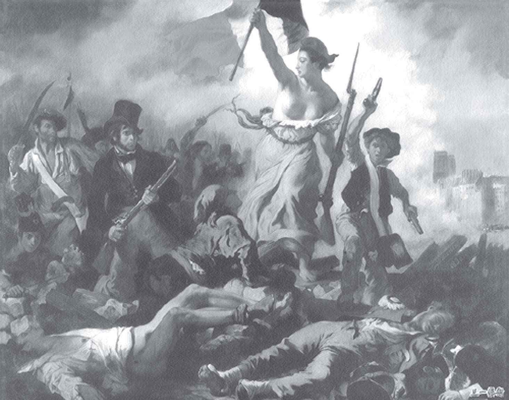
德拉克洛瓦的《自由引导人民》
由于拉格朗日所取得的成就，撒丁国王赞助了他去巴黎和伦敦游学的费用，但他却在巴黎生了一场大病，待到身体稍好就急切地返回都灵。不久，他又接到普鲁士国王腓特烈二世的邀请去了柏林，在那里一待就是11年，直到腓特烈二世去世。这一次，法国终于没再错过拉格朗日，路易十六把他邀请到了巴黎，那一年是1787年，但拉格朗日已经把兴趣转向了人文科学、医学和植物学等。比他年轻19岁的玛丽皇后对他爱护有加，尽一切所能缓解他的消沉情绪。
两年以后，法国大革命的高潮席卷了巴黎，似乎也打破了拉格朗日的冷漠，让他的数学头脑再次活跃起来。他谢绝了重返柏林的邀请，依靠自己的缄默度过了恐怖岁月，而化学家拉瓦锡（Lavoisier，1743—1794）则人头落地。等到巴黎师范学院成立，拉格朗日被任命为教授，之后又成了巴黎综合理工学院的第一位教授，为拿破仑麾下的年轻军事工程师们讲授数学，其中就有未来的数学家柯西（A.L.Cauchy，1789—1857）。在两次战役之间将关注点转到内政事务上的拿破仑也经常来拜访拉格朗日，谈论数学和哲学，并让他当上了参议员和伯爵。“拉格朗日是数学科学领域中高耸的金字塔。”这位征服过埃及的不可一世的皇帝赞叹道。
晚年的拉格朗日不无嫉妒地谈及牛顿，“无疑，他是特别有天赋的人，但是我们必须看到，他也是最幸运的人，因为找到建立世界体系的机会只有一次。”相比之下，拉普拉斯（P.S.Laplace，1749—1827）比拉格朗日更为不幸，因为他不仅无法取得像牛顿那样的成就，而且由于他的学术生涯恰好均匀地分布在两个世纪，可是，18世纪有欧拉和拉格朗日，19世纪有高斯。因此，诸如某某世纪最杰出的数学或科学人物之类的头衔不可能落到他头上。尽管如此，拉普拉斯也度过了辉煌的一生，这与他的才智、个人努力，以及有一个像拿破仑那样的学生不无关系。
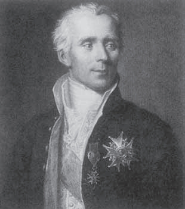
“法兰西的牛顿”：拉普拉斯
巴黎拉普拉斯地铁车站。作者摄
拉普拉斯的双亲是农民，他的出生地在法国北部邻近英吉利海峡的卡尔瓦多斯省，属于下诺曼底大区，即“二战”中盟军登陆的地方。在乡村学校读书期间他就显出多方面的才能，其中包括辩论口才，并因此得到了富有邻居的关心，他作为一名走读生进了当地的一所军事学校。可能是因为他的非凡记忆能力而不是数学才华，一位有影响力的人士为他写了一封推荐信，18岁的拉普拉斯揣着这封信去了巴黎，这是他第一次出门远行。
可是，这封信却差点儿害了拉普拉斯。《百科全书》副主编、数学家达朗贝尔见拉普拉斯时对后者递交的推荐信并不在意。回到住处以后，不甘心的拉普拉斯连夜写下了一封关于力学原理的信，这封信果然起了作用，达朗贝尔阅后回信，请拉普拉斯立刻去见他。达朗贝尔在回信中写道：“我几乎没有注意到你的那封推荐信。你不需要别人的推荐，你已经更好地做了自荐。”几天以后，在达朗贝尔的引荐下，拉普拉斯当上了巴黎军事学院的教授，并在那里遇到了他未来的学生——拿破仑。
相比拉格朗日，拉普拉斯在纯粹数学方面花费的精力不多，取得的成就也比较少，并且基本上是为了满足天文学研究的需要。在行列式计算时有按多行（列）展开的拉普拉斯定理，即设任意选定k行（列），则由这k行（列）元素所组成的一切k级子式与它们的代数余子式的乘积之和等于行列式的值。在微分方程中也有所谓的拉普拉斯变换，它通过无穷积分把一类函数F（t）变换为另一类函数f（p），即
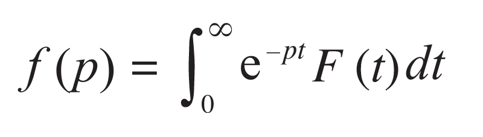
当然，拉普拉斯最著名的作品还是他的5卷本《天体力学》，这为他赢得了“法兰西的牛顿”的美称。他从24岁开始就把牛顿的引力说应用于整个太阳系，探讨了土星轨道为何不断膨胀而木星轨道则不断收缩这类特别困难的问题，证明了行星轨道的偏心率和倾角总保持很小且恒定，能够自动调整，还发现了月球的加速度同地球轨道的偏心率有关，这从理论上解释了太阳系动态观测中的最后一个反常现象。可以说，拉普拉斯的名字与宇宙的星云说密不可分，我们在前面谈论微积分学的影响时提到的关于势能的拉普拉斯方程就是一个例证。
如何评价拉普拉斯和拉格朗日这两位科学巨人，这是后来的数学家同行们经常要谈起的话题。19世纪的法国数学家泊松这样写道：“拉格朗日和拉普拉斯在他们的一切工作中，不论是研究数学，还是研究月球的天平动效应，都有着深刻的差别。拉格朗日往往在他探讨的问题中只看到数学，把它作为问题的根源，因此他高度评价数学的优美与普遍性。拉普拉斯则主要是把数学作为一个工具，每当一个特殊的问题出现时，他就巧妙地修改这个工具，使它适用于该问题……”
至于在为人处事或人格上，两个人也有着鲜明的差别。傅里叶曾这样评价拉格朗日：“他淡泊名利，用他的一生，高尚、质朴的举止，崇高的品质，以及精确而深刻的科学著作，证明他对人类的普遍利益始终怀着深厚的感情。”而拉普拉斯则被视为数学家中势利小人的典型代表，“对头衔的贪婪，政治上的摇摆不定，渴望得到公众的尊重，为成为不断变化的注意力的焦点而出风头”（美国数学家贝尔语）。
不过，拉普拉斯的性格中也有坦诚的一面。例如，他的临终遗言是这样说的，“我们所知的不多，我们未知的无限”。正因为如此，他的学生拿破仑一边批评他“到处找细微的差别，那只是一些似是而非的意见”，把无穷小精神带入行政工作；一边加封他为伯爵，授予他法国荣誉军团的大十字勋章和留尼汪勋章，在任命他做经度局局长之后，又让他当上内政部部长。拉普拉斯在政治上是一个“不倒翁”，波旁王朝复辟以后，他晋升为侯爵并进入了贵族院，还亲手签署了流放拿破仑的法令，同时担任改组巴黎综合理工学院的委员会主席。
有个流传甚广的故事：称帝以后的拿破仑读完《天体力学》以后问它的作者，“为什么你的著作中没有提到上帝？”拉普拉斯答道：“陛下，我不需要那个前提。”这句话让我们想起欧几里得回答托勒密国王时所说的那句话，“几何学中没有王者之路。”事实上，拉普拉斯舍弃上帝可能是想胜牛顿一筹，因为牛顿不得不依赖上帝的存在和“第一推动力”，而且拉普拉斯考虑的天体比牛顿的太阳系范围更广。
无论是拉普拉斯还是拉格朗日，他们与拿破仑的关系都属于伟大的科学家与开明君主之间的关系，充其量只是君臣关系。蒙日（G.Monge，1746—1818）就不同了，虽然他比拉普拉斯还年长三岁，数学方面的才华也稍显逊色，却由于个人的阅历和开放的性格，与年轻的拿破仑建立起亲密的友谊。在波旁王朝复辟以后，蒙日不仅得不到像拉普拉斯那样的爵位和荣耀，反而被通缉以致四处躲藏，他被当成（也的确）是那个科西嘉人的心腹。事实上，正如拿破仑所说，“蒙日爱我，就像一个人爱他的情人。”
蒙日出生在法国中部科多尔省的小镇博讷，隶属盛产葡萄酒的勃艮第大区。该镇位于第戎西南，今天从蒙特卡罗到巴黎的高速火车经由此地。蒙日的父亲是一个小贩和磨刀匠，很重视儿子的教育，使得蒙日在学校的课业成绩门门领先，包括体育和手工。14岁那年，蒙日在没有图纸的情况下就设计出一架消防用的灭火机，他依赖于两件工具：坚持不懈的意志和灵巧的手指，这架灭火机以几何的精确性体现出他的思想。两年以后，他又独立绘制了一幅家乡的大比例地图，并因此被人推荐到里昂的一所教会学校教授物理学。
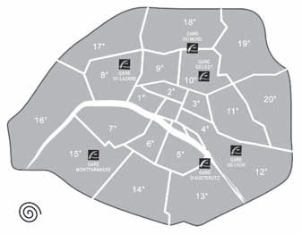
以阿基米德螺线排列的巴黎分区图
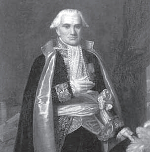
敢于顶撞拿破仑的蒙日
有一次，在从里昂回家乡的路上，蒙日遇见了一位看过他绘制的地图的军官，这位军官介绍蒙日到北部香槟—阿登大区的首府沙勒维尔—梅济耶尔的皇家军事工程学院做教官。那座城市距离比利时边境只有14公里，也是诗人兰波的出生地，不过后者诞生于一个多世纪之后。蒙日做的是下等职员，测量和制图是他的日常工作，结果他乘机创立了一门新的几何学——画法几何，也就是在一个平面上描画三维空间中的立体图形的方法。他因此得到授课的权利和机会，他的一个学生卡诺（S.Carnot，1796—1832）后来成为卓越的几何学家，并积极投身于法国大革命。
1768年，22岁的蒙日被任命为皇家军事工程学院的数学教授，几年以后又兼任物理学教授。1783年蒙日离开皇家军事工程学院，到巴黎担任法国海军学员主考官。幸好在去巴黎就职之前，他完成了学术生涯中的大部分发现，并娶了一位年轻、美丽、忠诚的寡妇。因为蒙日在到达巴黎以后，就陷入了权力斗争，被势利小人纠缠。接着法国大革命爆发，他不得不卷入其中，甚至在革命党人的逼迫下出任了新政府的海军部长。
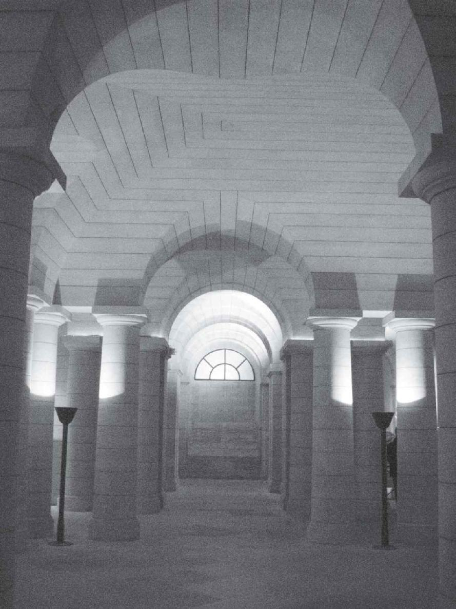
巴黎先贤祠墓道，拉格朗日、蒙日、卡诺和孔多塞均安葬于此。作者摄
1796年蒙日逃离巴黎后不久，就收到了已经坐上最高权力宝座的拿破仑的来信。信的开头拿破仑回忆了若干年前他这个年轻不得志的炮兵军官受到当时担任法国海军部长的蒙日的热情接见，接着对蒙日不久前完成的一次意大利公务旅行表示感谢。原来，那次拿破仑派蒙日到意大利，负责挑选意大利人作为战败赔偿而献给拿破仑的绘画、雕塑和其他艺术作品。幸亏蒙日手下留情，没有把“下金蛋的鸡”宰杀，为拿破仑的故国意大利保存了相当多的珍稀艺术品。之后，他们俩维持了长久亲密的友谊。即使在拿破仑称帝之后，蒙日也是唯一敢在拿破仑面前讲真话甚至顶撞他的人。
巴黎综合理工学院创办后，蒙日成为第一任校长。这所学校以及巴黎高等师范学院的创办，标志着法国数学与科学史上最光辉时期的到来。可是，拿破仑的心思并不完全在法国，1798年，他亲自率领大军远征埃及，蒙日作为文化军团的骨干，与三角级数的发明者傅里叶随同前往。据说在地中海的航程中，拿破仑在旗舰上每天早上都要召集蒙日等人讨论一个重大的话题，比如地球的年龄、世界毁于大火或洪水的可能性、行星上是否可以住人，等等。在抵达开罗之后，蒙日以法兰西学院为蓝本，创建了埃及研究院。
最后，我们要谈一谈蒙日在数学上所做的贡献。除了创立画法几何以外，他还首先把微积分应用于曲线和曲面研究，并出版了微分几何方面最早的一本著作。蒙日极大地推进了空间曲面和曲线理论的发展，其特点是与微分方程紧密结合，用微分方程表示曲面和曲线的各种性质，这正是“微分几何”一词的由来。例如，蒙日给出了可展曲面的一般表示形式，并证明除垂直于XOY平面的柱面以外，这类曲面总满足下列偏微分方程：
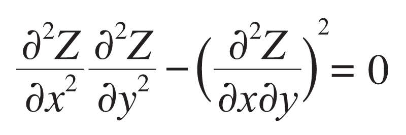
蒙日在巴黎综合理工学院做校长期间，有时也给学生讲课。有一次，他在讲课的过程中发现了一个巧妙的几何定理，它是关于四面体的一个性质。众所周知，四面体有4个面和6条边，每条边只与另外5条边中的一条不相交，叫作互为对边。蒙日定理是指，通过四面体的每条边的中点并垂直于其对边的6个平面必交于一点，这个点和那6个平面分别被称为“蒙日点”和“蒙日平面”。这里补充一句，有机会去巴黎的读者可以在那里找到蒙日大街和蒙日咖啡馆。